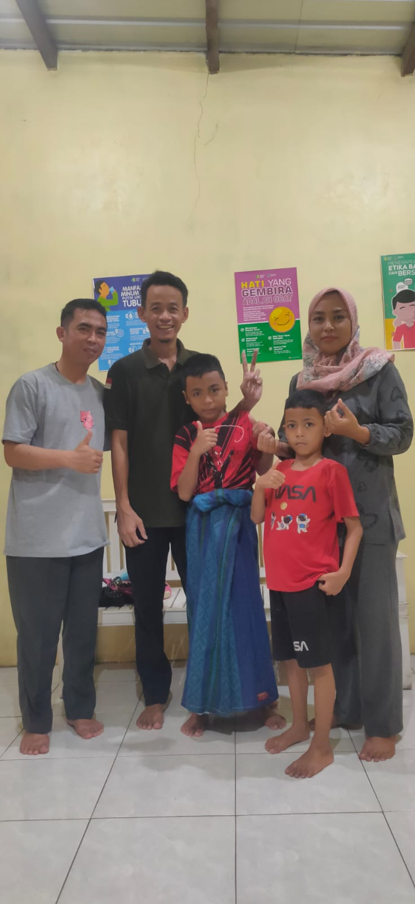
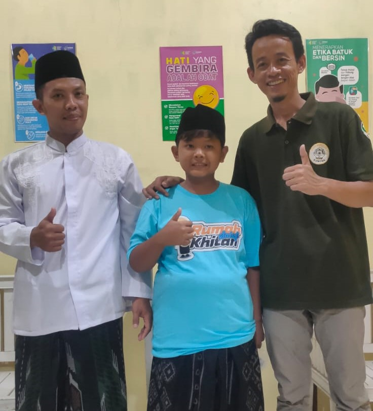
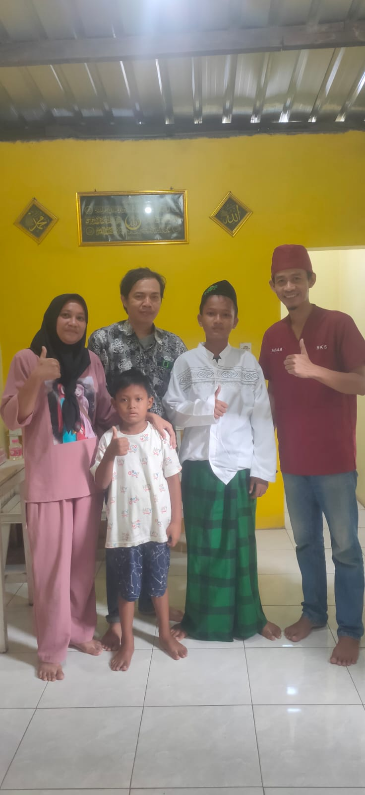
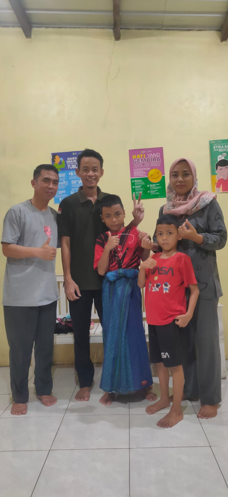
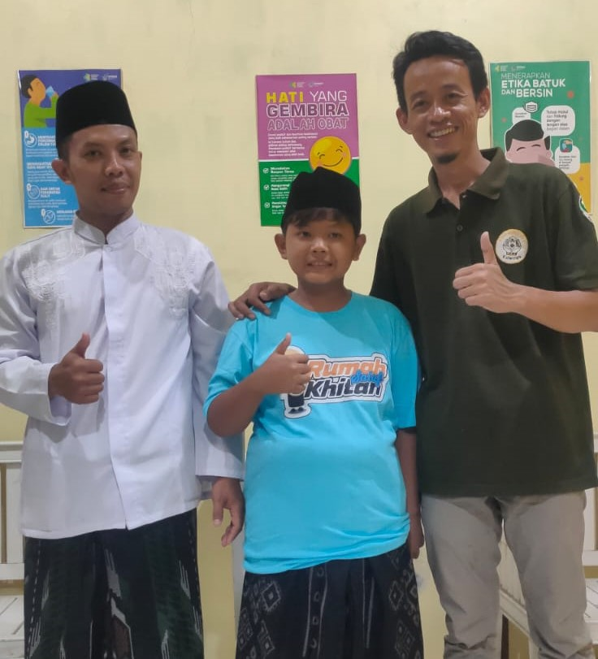
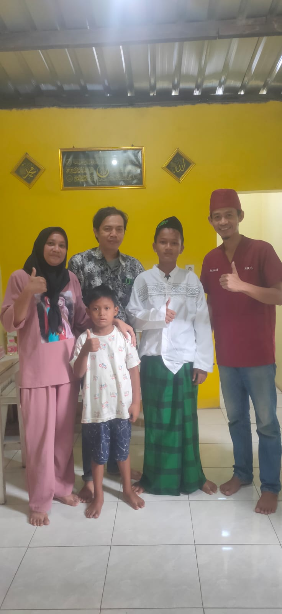

Tentang Kami
Rumah Khitan Salaf adalah fasilitas kesehatan atau klinik yang khususnya melayani khitan (sunat) dengan menggunakan berbagai macam metode: khitan konvensional, khitan laser, dan khitan super siler. Pelayanan tidak hanya untuk anak tetapi juga dewasa. Selain itu kami melayani perawatan luka (luka diabet, luka pasca operasi, luka kecelakaan), bedah minor, layanan kunjungan (homecare), dan cek laborat sederhana (gula darah, asam urat, kolesterol).
Layanan Unggulan Kami
Kami menyediakan berbagai layanan kesehatan untuk memenuhi kebutuhan Anda dan keluarga.
Khitan Modern
Metode Konvensional, Laser, Super Siler/Lem. Aman dan minim pendarahan.
Mulai dari Rp 600.000,00.
Perawatan Luka
Penanganan luka diabetes, pasca operasi, kecelakaan, dan lainnya.
Layanan homecare: Rp 100.000,00 (atau sesuai kondisi).
Datang ke klinik: Rp 50.000,00 (atau sesuai kondisi).
Homecare
Layanan kunjungan ke rumah untuk kenyamanan pasien.
Mulai dari Rp 100.000,00.
Cek Laborat Sederhana
Pengecekan Gula Darah, Asam Urat, dan Kolesterol.
Gula darah: Rp 20.000,00.
Asam urat: Rp 20.000,00.
Kolesterol: Rp 25.000,00.
Paket cek laborat: Rp 50.000,00.
Bedah Minor
Tindakan bedah sederhana seperti pengangkatan mata ikan, uci-uci, perawatan kuku, dll.
Mulai dari Rp 200.000,00 atau sesuai kondisi.
Galeri Kegiatan
Momen-momen berharga di Rumah Khitan Salaf.


 







Hubungi Kami
Kami siap melayani Anda. Kunjungi kami atau hubungi melalui informasi di bawah ini.
Alamat
Kp. Penjalin, RT 03/RW 06, Protomulyo, Kec. Kaliwungu Selatan, Kabupaten Kendal, Jawa Tengah, 51372
Telepon
0857-4095-2777Youtube
Rumah Khitan SalafJam Buka
Senin - Minggu: 16:00 - 21:00 WIB
Lokasi
Kotak Saran
Kami sangat menghargai masukan Anda. Silakan isi kotak saran di bawah ini.